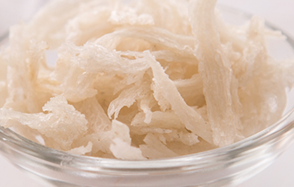

原文连接:https://www.daquan.com/post/12894.html
燕窝有着抗衰老，提高免疫力的作用，很多女性都用燕窝来滋补身体。燕窝滋补的方法本来就是需要坚持长期的食用的，所以燕窝天天吃时没有副作用的。但是燕窝的食用要注意在感冒、肠胃功能较差、腹泻、呕吐的时候可以当天不吃燕窝。天天吃燕窝还要注意每天的剂量和食用方法，才能保证营养的吸收。
燕窝可以天天吃
1、长期吃燕窝的功效
长期食用燕窝是没有副作用的，一般燕窝是在长期坚持服用3个月以上才会感觉到明显的变化。长期服用燕窝的女性气色会红润，长期食用燕窝的女性不会感觉到疲惫，干什么都有活力。长期吃燕窝还会减少脸上的皱纹、改善月经周期、提高人体免疫力以及记忆力。女性长期吃燕窝有着能够延缓更年期的功效。
2、什么时候不适合吃燕窝
燕窝虽然长期吃效果好，但是并不是每天都适合食用的。像如果感冒了还有出现肠胃不适、出现了呕吐、发烧、腹泻的情况最好是不要吃燕窝的。这是因为燕窝本身就是不好吸收的滋补品，这种时候吃燕窝其一会引起燕窝浪费，还有就是因为燕窝会引起肠胃的不适。像刚刚手术过后的女性也不应该吃燕窝，手术过后就吃燕窝会引起伤口恶化。
食用燕窝需要注意的
1、食用剂量
燕窝如果需要每天食用的，就要注意每天的食用剂量。燕窝只是滋补品，是不能当做三餐食用的，每天要食用适当的量才有滋补的功效，吃多了会导致营养流失导致浪费，吃少了滋补作用太小。燕窝每天食用的剂量是在，一天吃3g以上4g一下。
2、食用方法

制作燕窝时要注意多种工序，这是因为燕窝虽然有很多营养价值但是制作不当，会导致营养的流失。像燕窝需要用纯净水来浸泡，纯净水侵泡没有矿物质不会造成营养的流失。第一遍轻泡稍微泡开后换一边水，再泡5小时以上，然后彻底泡开捞出将里面的杂质给一点点挑干净。最后再次清洗、过滤燕窝之后，将燕窝放在容器中，用水稍微覆盖，隔水蒸煮。血糖高的可以放两颗红枣，血糖正常的可以放入冰糖，这样口感更好。
燕窝的分辨
1、颜色

燕窝是比较珍贵的营养品，现在因为各种购买渠道的方便，也导致了很多假冒伪劣的燕窝出现。燕窝的分辨首先要知道燕窝的颜色并不是洁白的，耳屎米白透明的，有一点点发黄。如果是特别白的，可能是因为漂白过。
2、质地
燕窝的质地应该是轻薄、透亮的，这是因为燕窝本身就是唾液组成的，如果燕窝特别厚重并且不透亮可能是假货或者是品质差的燕窝。所以如果燕窝出现了
结语：通过上文的介绍，相信大家都了解了关于女人天天吃燕窝副作用，只要注意剂量和食用方法是没有副作用的。像燕窝这类滋补的药材一定要在信任的地方，最好是实体店亲自确认质量后购买，如果买到质量差的或者是假的，可能会引起其他疾病。